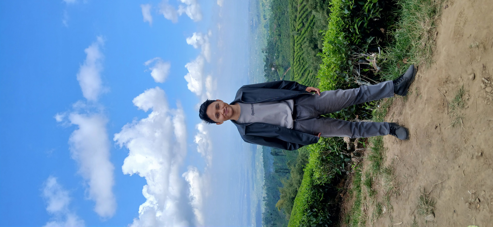

Fathur Rahman Rafli
Information Systems Graduate — Turning business processes into structured digital solutions.
Fresh graduate dengan pemahaman Project Management, pengembangan & pengujian sistem, administrasi proyek, dan analisis kebutuhan.

Tentang Saya
Lokasi
Lumajang, Jawa Timur, Indonesia
Fresh graduate Sistem Informasi dengan pemahaman terkait Project Management, pengembangan dan pengujian sistem, administrasi proyek, serta metodologi pengembangan perangkat lunak. Terbiasa melakukan analisis kebutuhan, dokumentasi sistem, pengelolaan data, dan laporan teknis.
Pendidikan
Program studi Sistem Informasi dengan fokus pada analisis bisnis, perancangan sistem, dan implementasi solusi digital.
Selected Projects

Sistem Informasi Pengendalian Persediaan Barang
CV Anugerah Kencana Mandiri · Sep 2022 – Jan 2023
Analisis proses bisnis aliran barang gudang, merancang prototype sistem, dan presentasi hasil kepada direktur & pegawai.

Sistem Informasi Penjualan Buah
PT Sata Harum · Sep 2023 – Agu 2024
Analisis bisnis proses pemesanan buah, wawancara dengan Manager Farm, perancangan sistem & kode program berbasis web.
Cara Saya Bekerja
Memahami kebutuhan & proses bisnis.
Menganalisis kebutuhan & alur sistem.
Merancang solusi & prototype.
Mengembangkan solusi berbasis web.
Pengalaman Organisasi

- Panitia koordinator bus untuk peserta Sistem Informasi & Teknik Informatika ke Jakarta, bekerja sama dengan HIMATIKA mengunjungi Trans 7, PT Indivara, dan Jakarta Smart City.
- Panitia Dies Natalis HMSI ke-9: menyusun rundown, memastikan kelancaran acara, menjaga citra organisasi di hadapan tamu undangan.
- Panitia studi banding dengan Himpunan Mahasiswa Sistem Informasi Telkom Purwokerto: menyusun rundown dan memastikan kelancaran acara.
Skills & Expertise
Mari Terhubung
Terbuka untuk kesempatan kerja, project, kolaborasi, maupun diskusi mengenai pengembangan sistem dan teknologi.
Email
fathur.rahman.rafli.official@gmail.com
Phone
+62 857-8831-5137
LinkedIn
linkedin.com/in/fathur-rahman-rafli/
Lokasi
Lumajang, Jawa Timur,
Indonesia